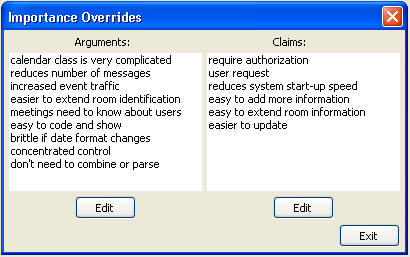

Find Importance Overrides
The user can also display a list of all claims and arguments where the default
importance has been overridden. This can happen in several ways:
• A claim (which could be used by many arguments) has been given an importance
other than the default inherited from the Argument Ontology.
• An argument that refers to a claim has been given an importance other than the
default inherited from the claim (which inherits from the Argument Ontology)
• An argument that refers to a requirement has been given an importance of
something other than “Essential.”
This display is brought up by selecting “Find Importance Overrides” from the
Rationale Query Menu. The following figure shows the Importance Override Display.
